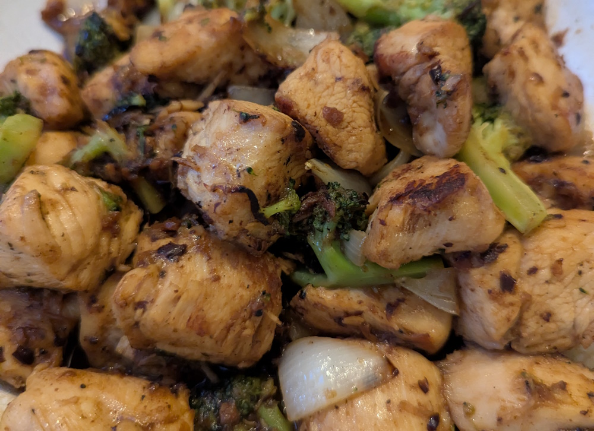

Black Bean Chicken & Broccoli
 Meat
Meat
Classic tender chicken and vegetable stir fry

To marinade the chicken
500gchicken breast1 tbspcornstarch2 tbspwater1/4 tspsalt1/4 tspMSG (optional)1 tbspoyster sauce1/4 tspwhite pepper
Cut the chicken breast into thin slices. Set aside in a bowl.
In a small bowl mix the cornstarch, water, salt, MSG (if using), oyster sauce and white pepper. Mix together until the cornstarch dissolves.
Once the marinade is thoroughly combined, use your hand to mix it with the chicken, squeezing the chicken to help the flavour penetrate the meat. Leave to marinate for at least 10 mins.
For the sauce
2 tbspblack bean and garlic sauce (such as Lee Kum Kee)1 tbspoyster sauce1 tspsugar1/2 cupwater
In a bowl, mix together the black bean garlic sauce, oyster sauce, sugar, and water, and set aside.
To cook
3 tbspvegetable oil2/3 cuponion (cut into 1-inch/2.5cm pieces)2 cupbroccoli1 infresh ginger, grated
Blanche the broccoli in boiling water for a few mins until bright green but still crunchy. Alternatively you can steam the broccoli in the microwave for 2 mins in a loosely covered bowl with 1cm of hot water. Drain the broccoli and set aside
Heat your wok over high heat until it starts to smoke lightly. Turn off the heat and add 2 tbsp of oil around the perimeter of the wok.
Place back on high heat and add in the chicken. Sear the chicken on both sides until browned (this should only take 2-3 minutes). Remove the chicken from the wok, and set aside.
Reduce the heat to medium-high, and add the remaining 1 tbsp of oil, ginger and onions. Stir-fry for 30 seconds, until the onions have very light sear on them.
Add in the brocoli and the chicken and pour over the sauce mixture. Bring to a simmer.
Cook until the veg is just crisp-tender. Serve immediately with steamed rice!